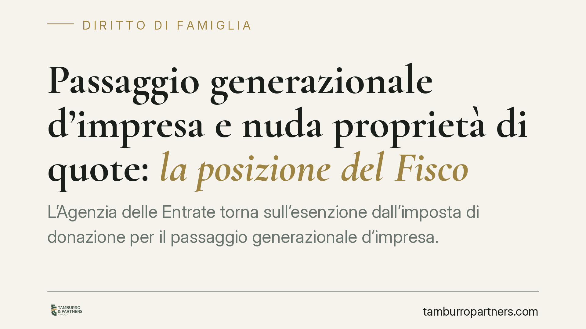

Passaggio generazionale d'impresa e nuda proprietà di quote: la posizione del Fisco
L'Agenzia delle Entrate torna sull'esenzione dall'imposta di donazione per il passaggio generazionale d'impresa. Nel mirino la donazione di quote di società di persone in nuda proprietà con riserva di usufrutto: secondo la prassi più recente il beneficio spetterebbe solo se il figlio acquisisce poteri gestori effettivi. Un'impostazione che diverge da una parte della giurisprudenza di legittimità e che espone i contribuenti a un rischio fiscale concreto.

Il contesto
Il trasferimento generazionale dell'azienda o delle quote sociali dai genitori ai figli gode, a determinate condizioni, di un'esenzione dall'imposta di donazione. È una misura pensata per non gravare fiscalmente il ricambio alla guida delle imprese familiari.
Uno degli strumenti più usati è la donazione in nuda proprietà con riserva di usufrutto. Conviene chiarire subito i due termini. La *nuda proprietà* è la titolarità del bene privata del diritto di goderne: chi la riceve è proprietario, ma non incassa i frutti. L'*usufrutto* è invece il diritto di utilizzare il bene e percepirne i redditi. Nel passaggio generazionale il genitore dona ai figli la nuda proprietà delle quote e trattiene per sé l'usufrutto, conservando così, in tutto o in parte, la percezione degli utili e spesso l'esercizio del voto.
Inquadramento normativo
L'esenzione è disciplinata dall'art. 3, comma 4-ter, del D.lgs. 346/1990 (Testo unico sull'imposta sulle successioni e donazioni, TUS). La norma esclude da imposta i trasferimenti di aziende o partecipazioni a favore di discendenti e del coniuge, subordinandoli al rispetto di specifiche condizioni.
Per le società di capitali la condizione è espressa: il beneficiario deve acquisire o integrare il controllo ai sensi dell'art. 2359, primo comma, n. 1, del codice civile, e mantenerlo per almeno cinque anni. Per le società di persone il testo non richiama il requisito del controllo, riferendosi alla prosecuzione dell'esercizio dell'attività o alla detenzione della partecipazione per il medesimo periodo quinquennale. La distinzione non è di dettaglio: incide sul contenuto stesso dell'impegno che il beneficiario assume.
Sul quadro è intervenuto il D.lgs. 139/2024, che dal 1° gennaio 2025 ha riorganizzato il TUS. La riforma ha in larga parte recepito prassi e orientamenti già consolidati, precisando le condizioni di accesso al beneficio più che introdurre restrizioni inedite. Resta il fatto che l'applicazione concreta alle donazioni in nuda proprietà continua a generare incertezza interpretativa.
Il nodo interpretativo
Il punto controverso è se, nella donazione in nuda proprietà con riserva di usufrutto, il beneficiario stia effettivamente ricevendo quel fascio di poteri che giustifica l'esenzione. Secondo l'orientamento più rigoroso dell'Agenzia, il figlio nudo proprietario non subentrerebbe nella gestione fino alla consolidazione dell'usufrutto: mancherebbe quindi l'acquisizione dei poteri gestori richiesti per il beneficio.
Una parte della giurisprudenza di legittimità ha invece valorizzato la funzione economica dell'operazione, ritenendo compatibile con l'esenzione anche il trasferimento della sola nuda proprietà, purché finalizzato all'effettivo passaggio dell'impresa. Il contrasto tra prassi amministrativa e orientamento giurisprudenziale non è ancora del tutto composto.
Implicazioni pratiche
Per l'imprenditore che ha già strutturato il passaggio generazionale con questo schema, la posizione dell'Agenzia comporta un rischio fiscale non teorico. Se in sede di controllo l'esenzione venisse disconosciuta, il contribuente sarebbe esposto al recupero dell'imposta di donazione, oltre a sanzioni e interessi.
La divergenza tra Fisco e giurisprudenza significa, in concreto, che l'esito di un eventuale contenzioso non è scontato in nessuna delle due direzioni. Chi ha impostato l'operazione sulla sola nuda proprietà, confidando nell'orientamento più favorevole, dovrebbe essere consapevole che la definizione della controversia potrebbe richiedere il passaggio in giudizio.
Cosa fare in concreto
- È opportuno riesaminare gli atti di donazione già stipulati, verificando come sono stati ripartiti poteri gestori e diritto di voto tra usufruttuario e nudo proprietario.
- Può essere valutata l'introduzione, nell'atto o nei patti sociali, di clausole che attribuiscano al beneficiario poteri gestori effettivi, coerenti con la ratio dell'esenzione.
- In presenza di operazioni ancora da perfezionare, è utile una preventiva analisi di compatibilità con la prassi vigente, considerando anche lo strumento dell'interpello all'Agenzia delle Entrate.
- Per le società di persone è consigliabile distinguere con precisione il requisito applicabile, che non coincide con il controllo quinquennale previsto per le società di capitali.
- In caso di contestazione già ricevuta, è prudente valutare tempestivamente le linee difensive alla luce del contrasto interpretativo in essere.
Contributo informativo a cura di Tamburro & Partners Avvocati. Non costituisce parere legale.
Ogni famiglia ha il suo equilibrio.
Separazione, divorzio, affidamento, assegno: se vuoi un confronto riservato su una specifica situazione, scrivi allo studio. Ti rispondiamo entro un giorno lavorativo.